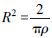
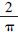

根据广义相对论，空间的几何性质并不是独立的，而是由物质决定的。因此，我们只有已知物质的状态并以此为依据进行考虑才能对宇宙的几何结构作出论断。根据经验我们知道，对于一个适当选定的坐标系而言，诸星的速度比起光的传播速度来是相当小的。因此，如果我们将物质看作是静止的，我们就能够在粗略的近似程度上得出一个关于整个宇宙的性质的结论。
从我们前面的讨论已经知道，量杆和钟的行为受引力场的影响，亦即受物质分布的影响。这一点本身就足以排除欧几里得几何学在我们的宇宙中严格有效的这种可能性。但是可以想象，我们的宇宙与一个欧几里得宇宙仅有微小的差别，而且由于计算表明，甚至像我们的太阳那样大的质量对于周围的空间的度规的影响也是极其微小的，因而上述看法就显得越发可靠。我们可以设想，就几何学而论，我们的宇宙的性质与这样的一个曲面相似，这个曲面在它的各个个别部分上是不规则地弯曲的，但整个曲面没有什么地方与一个平面有显著的差别，就像是一个有细微波纹的湖面。这样的宇宙可以恰当地称为准欧几里得宇宙。就其空间而言，这个宇宙是无限的。但是计算表明，在一个准欧几里得宇宙中物质的平均密度必然要等于零。因此这样的宇宙不可能处处有物质存在；呈现在我们面前的将是我们在第30节中所描绘的那种不能令人满意的景象。
如果在这个宇宙中我们有一个不等于零的物质平均密度，那么，不论这个密度与零相差多么小，这个宇宙就不可能是准欧几里得的。相反，计算的结果表明，如果物质是均匀分布的，宇宙就必然是球形的(或椭圆的)。由于实际上物质的细微分布不是均匀的，因而实在的宇宙在其各个个别部分上会与球形有出入，亦即宇宙将是准球形的。但是这个宇宙必然是有限的。实际上这个理论向我们提供了宇宙的空间广度与宇宙的物质平均密度之间的简单关系 [1] 。
[1] 对于宇宙“半径”R ，我们得出方程

在此方程中引用厘米·克·秒制，得出
=1.08·1027 ；ρ 是物质的平均密度，π是与牛顿引力常数有关的一个常数。